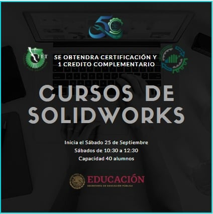
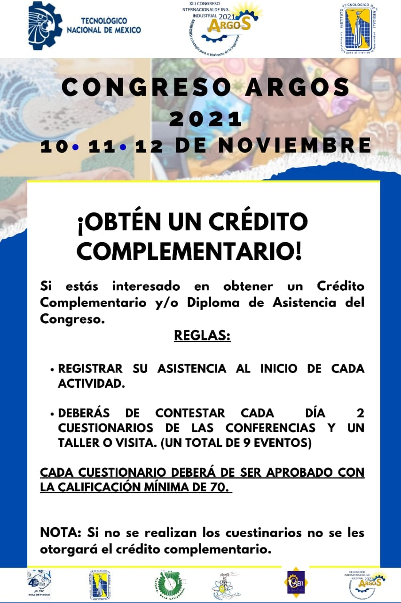
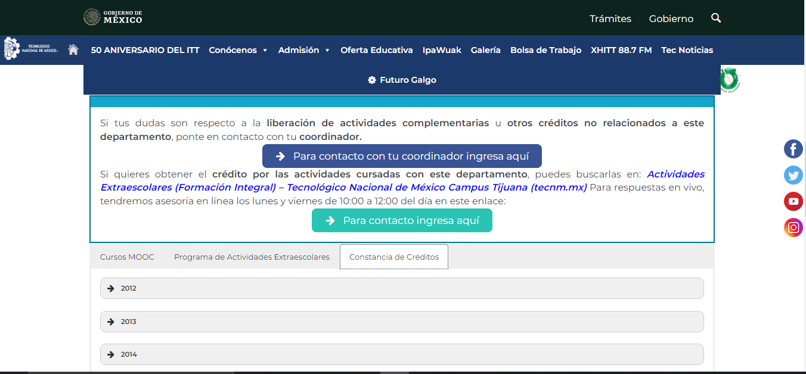

¿Qué son los créditos complementarios?
Créditos adicionales a los que te proporcionan las materias. Son créditos que complementan tu carrera, según tus necesidades de aprendizaje.
¿Cuál es el propósito de los créditos complementarios?
Para que el alumno tenga aprendizajes externos a las clases, que enriquezcan su carrera.
¿Cuántos créditos debo tener?
Se debe tener 5 créditos.
• 1 crédito de tutorías de inducción (cursando en 1er semestre, en caso de no haber aprobado deberá tomar el de inserción). OBLIGATORIO
• 1 crédito por actividades (cultural y/o deportiva). OBLIGATORIO
• 3 créditos complementarios por actividades académicas, cursos y/o de desarrollo.
Maneras de obtener creditos complementarios |
|
| 1 |
Tutorías(Obligatoria)El alumno la debe cursar en primer semestre. Si es alumno que no inicia la carrera en este Tecnológico, lo puede llevar a cabo en el semestre que ingresa al ITT. Si no llevaré las tutorías de inserción laboral. |
| 2 |
Actividades extraescolares(Obligatoria) NOTA: La banda de Guerra es considerada una actividad deportiva. |
| 3 |
Proyectos de investigacionConducir o participar en un proyecto de investigación formal, ya sea de propuesta propia o de algún docente. En cualquiera de los casos deberá haber productos de la investigación. |
| 4 |
Participación en eventos académicos
|
| 5 |
Taller de lecturaConsiste en llevar al alumno por una lectura guiada de una obra ya sea de su elección o una sugerencia del responsable de la actividad, donde se de un espacio de reflexión sobre la obra y critica a la misma. |
| 6 |
Conservación del medio ambiente y participación en ediciones
|
| 7 |
Talleres de formacion de personal y desarrollo humanoCursos con duración de 20 hrs., que coadyuven a la formación del alumno tanto en lo técnico como en el crecimiento personal. |
| 8 |
Construccion de prototiposDiseño y montaje de prototipos de dispositivos o maquinarias, que satisfagan una necesidad. |
| 9 |
Proyectos de emprendedoresLa puesta en funcionamiento de un proyecto de empresa protocolizado. |
¿Dónde solicitar los créditos complementarios?
No hay un sistema que lleve el control de los créditos de cada alumno, por lo cual el alumno debe llevar su propio control. Si la actividad fue realizada por el departamento de Ingeniería Industrial, podrá solicitarlo en la página de tutorías y créditos complementarios ing. Industrial ITT (p.ej ARGOS 2019 Adelante, limpieza de industrial y playa, cursos de MOOC Y MEXICOX, SolidWorks, etc.) Nota: Si la actividad no fue realizada por Ingeniería Industrial, solicitarla en el departamento correspondiente. Cada departamento proporciona créditos, debe pedirlo al departamento correspondiente. desarrollo académico, servicios escolares, vinculación según sea el caso.
¿Cómo obtener créditos complementarios?
- Extraescolares para primer semestre.
Se deben inscribir a formularios que se compartirán cada inicio de ciclo. Solo se puede hacer el comienzo del semestre por lo que se debe estar atento a los comunicados que se compartirán
https://www.tijuana.tecnm.mx/actividades-extraescolares/
https://www.facebook.com/TecNMTijuana
- Extraescolares por segundo semestre.
Si no hiciste la actividad extraescolar en primer semestre esto es lo que tienes que hacer:
Todos los jóvenes que, por algún motivo no llevaron la actividad extraescolar y no obtuvieron el primer crédito obligatorio en primer semestre, sólo podrán obtenerlo a través de cursos en línea que ofrece el Tecnológico Nacional de México en la plataforma: https://bit. ly/3BpVbr2 se recomienda inscribirse con los de primer semestre a pesar de ser de grados superiores puesto que la actividad extra escolar es obligatoria. Se le dará la facilidad al estudiante de tomar 2 cursos de los ofertados para esta área y así obtener el primer crédito obligatorio.
Si quieres obtener un segundo crédito este no deberá ser el mismo que ya has hecho, es decir si has cursado una actividad deportiva para tu hipotético segundo crédito tendrás que cursar una actividad cultural. La decisión de tomar el segundo crédito de una actividad extraescolar es opcional, pero puedes obtenerlo. Consulte aquí https://www.tijuana.tecnm.mx/actividades-extraescolares/ .
Sin embargo, necesita informarle a su coordinador de carrera sobre qué tomaste dos créditos extraescolares.
- Tutoriales de induccion
Las tutorías de inducción se llevan en primer semestre como una materia ya preestablecida, de todos modos, es preciso revisar si esta materia la estás cursando en primer semestre. Se cursa como una materia normal en la cual tú tendrás que aprobar haciendo diversos trabajos qué tú tutor aprobará o no para que puedas certificar la tutoría. En caso de no haber aprobado tutorías en el primer, deberá tomar tutorías de inserción laboral (NO AMBOS) solo sí cursa el tercer semestre en adelante. La convocatoria se publica en la página de tutorías durante las primeras semanas de cada semestre.
https://www.facebook.com/ConstanciasTutoriasIngInd
- Credito complementario
Los 3 créditos complementarios faltantes pueden ser obtenidos a través de conferencias que se llevan a cabo durante el semestre como pueden ser conferencias de Argos o cursos de SolidWorks, también puedes hacer cursos de MOOC y MEXICOX en los cuales podrás aprender de diferentes temas como una ayuda adicional a tus aprendizajes estandarizados por tu Kardex. Para iniciar a tomar un curso, tiene que verificar si éste cuenta con la característica de proporcionar un crédito complementario de lo contrario no podrá ayudarle a obtener uno. Durante la contingencia el máximo de créditos que puedes obtener de esta manera son dos, es decir dos cursos (1 de cada plataforma o dos de una de ellas), se otorgan los créditos por los cursos validados por la Academia de Ingeniería Industrial.La lista se encuentra publicada en la página de facebook Tutorías y Créditos complementarios Ing. TIC industriales.

¿Dónde puedo obtener la constancia de mi crédito extraescolar?
Crédito extraescolar se refiere a un crédito por actividades (culturales y/o deportivas). La constancia de esto se puede obtener ingresando a https://www.tijuana.tecnm.mx/actividades-extraescolares/

¿Dónde puedo obtener la constancia de mi crédito de tutorías?
deberá solicitarla vía Messenger en la página de Tutorías y créditos complementarios Ing. Industrial ITT (https://www.facebook.com/ConstanciasTutoriasIngInd), o vía e-mail al correo tutorias.industrial@tectijuana.edu.mx con la siguiente información (solicitar con correo institucional):
- nombre completo
- número de control
- Tutor o período en el que cursó la materia
- Carrera
- Modalidad
¿Dónde puedo obtener la constancia de mis créditos complementarios?
Deberá solicitarla vía Messenger en la página de Tutorías y créditos complementarios Ing. Industrial ITT (https://www.facebook.com/ConstanciasTutoriasIngInd), o vía e-mail al correo tutorias.industrial@tectijuana.edu.mx gastar la siguiente información (solicitar con correo institucional):
- nombre completo
- número de control
- Carrera
- actividad realizada
¿Dónde puedo obtener la constancia de mi crédito de MOOC y/o MEXICOX?
Deberá solicitarla vía Messenger en la página de Tutorías y créditos complementarios Ing. Industrial ITT(https://www.facebook.com/ConstanciasTutoriasIngInd), o vía e-mail al correo tutorias.industrial@tectijuana.edu.mx descargar la siguiente información (solicitar con correo institucional):
- nombre completo
- Carrera
- número de control
- Modalidad
- Certificado de finalización del curso con el enlace (tu nombre en el certificado deberá estar completo)
- Link que viene en la constancia
¿A dónde enviar los créditos una vez completados?
Cuando el alumno ya ha realizado las Actividades Complementarias, estas no serán cargadas automáticamente en su Kardex, hay que realizar el trámite con su coordinador. Una vez que el alumno ha cumplido con los 5 créditos de las Actividades Complementarias, envía un correo (desde su correo institucional exclusivamente) al coordinador ( industrial03@tectijuana.edu.mx ), donde solicita la acreditación de los 5 créditos, con el título ¨Solicitud de Constancia de Cumplimiento Actividades Complementarias de «nombre del alumno»,»#de control» (ejemplo Solicitud de Constancia de Cumplimiento Actividades Complementarias de MIGUEL CARCAÑO DELGADO, 18210777) . Anexando las evidencias de los créditos obtenidos en un solo archivo en PDF.
https://ingeborquez.es/?page_id=165&fbclid=lwAR3zyxd0HV9npyZBq2rWNhcdCyiGEc102jyA2py2Sxan1k-o2v1gkUc
¿Qué pasa si en 5to semestre aún me faltan créditos?
No hay sanciones, sin embargo, no hay que esperar a trámites de residencia, anteproyectos, servicio social, etc. límites antes mencionados. Recuerda que, para iniciar tu servicio social y residencia profesional, es necesario que las actividades complementarias se reflejen en tu Kardex.
No un:
- Si eres de modalidad semi-presencial tienes que seguir este mismo proceso, pero con el apoyo del profesor ingeniero Alfonso rojas al correo: edistancia.tutorias@tectijuana.edu.mx contactarlo para mayor informacion.
- Cuando volvamos dejar de aceptar 2 créditos de los cursos de MOOC Y MEXICOX y solo tomará 1 (por si no dejó claro en época pandémica se permiten 2 créditos entre los dos tipos de curso, pero al regresar a clases presenciales se limitará a uno solo)